In this project, we implemented many computer rendering techniques learned in lecture. Seeing the effects of these algorithms on a live example was extremely rewarding and helped reinforce our learning.
De Casteljau’s algorithm is used to evaluate polynomials from a set of points. The polynomial is used to define a Bezier curve. The way that it works is by taking two adjacent points and plotting a new point on that line that connects them at the given ratio. Then the algorithm recurses on the new points until one point is reached. There is also a ratio given to determine how far the new point should be between two existing points. Changing that value from 0 to 1 forms a smooth curve.
| 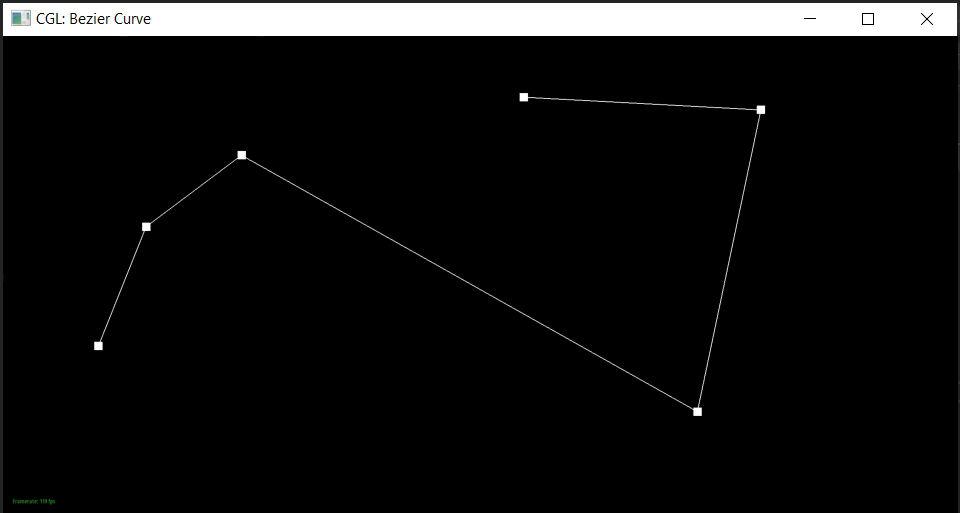 | 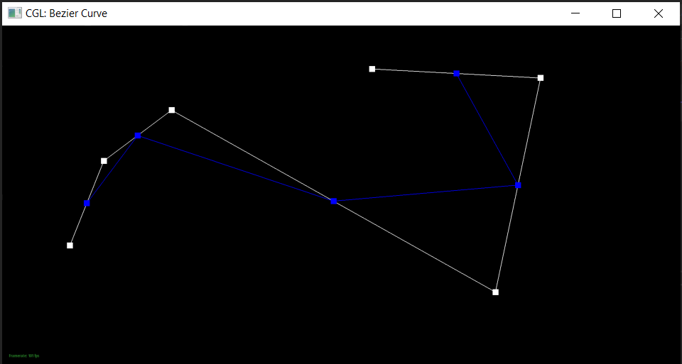 | 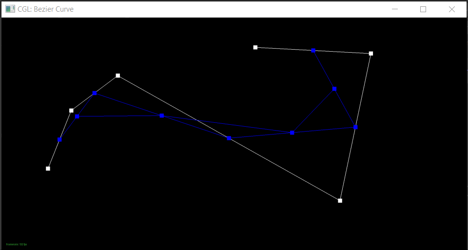 |
| 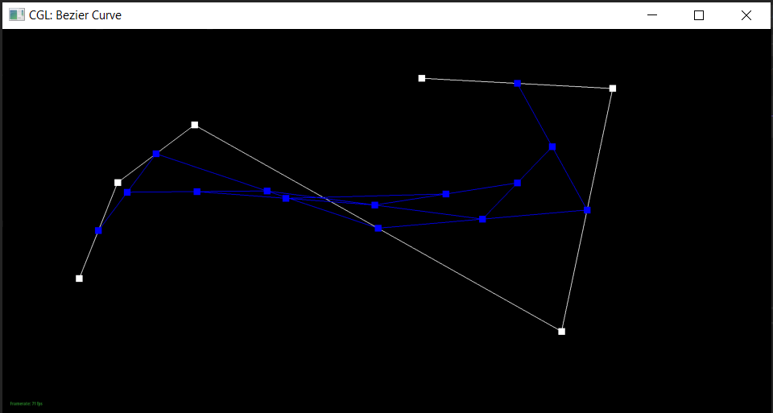 | 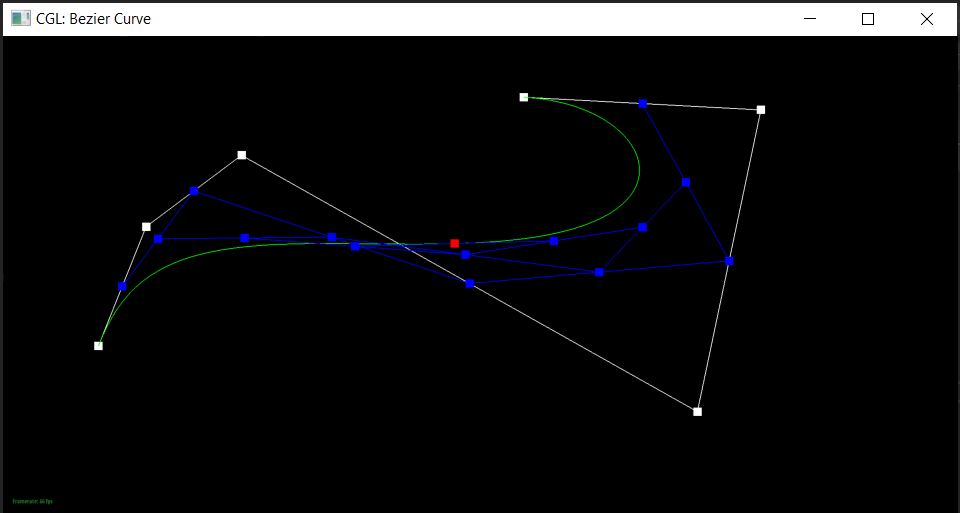 |
The algorithm extends to Bezier surfaces by using it on one dimension at a time. In a 3D coordinate of points, de Casteljau algorithm is performed on each row using a given constant. Then will yield a 2D array. Then the algorithm is performed again on that singular array using another constant. The final result will be a single point.
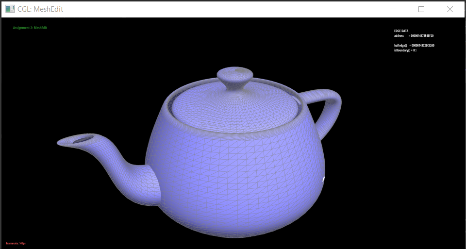For this part of the project, we iterated through all of the faces that included the given vertex. For each face, we obtained the normal, calculated the area of the face by taking the norm of the cross products of the vertices, and multiplied the normal by the area. This was then added to an ongoing sum of the total weighted areas, which was normalized after checking all the faces.
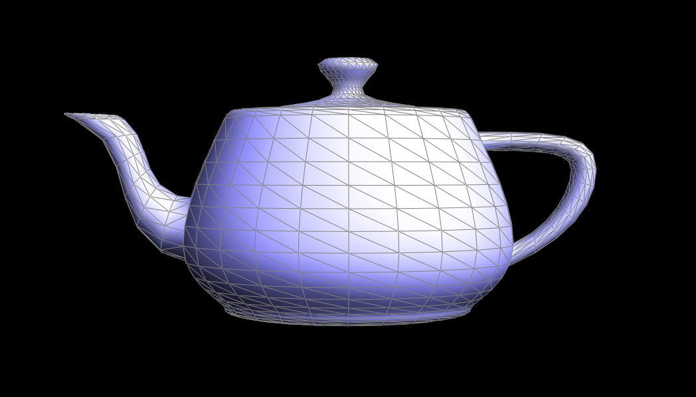As the instructions suggested, I drew out a simple case for an edge flip, with four vertices composing 2 faces. We began by labeling the vertices, edges, faces, and half-edges, both in the drawing and in the code. Then I drew out the edge flip, noted how the edges and faces would change, and modified the labels in the code accordingly.
|
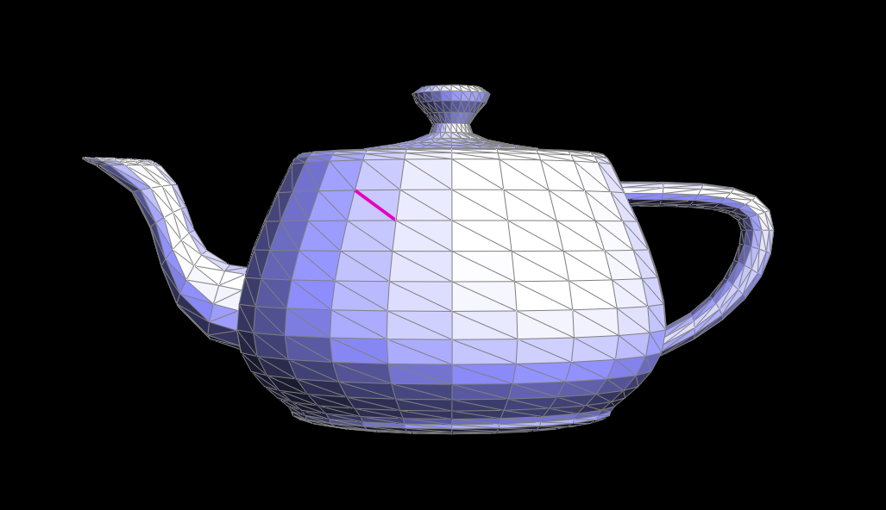
|
|
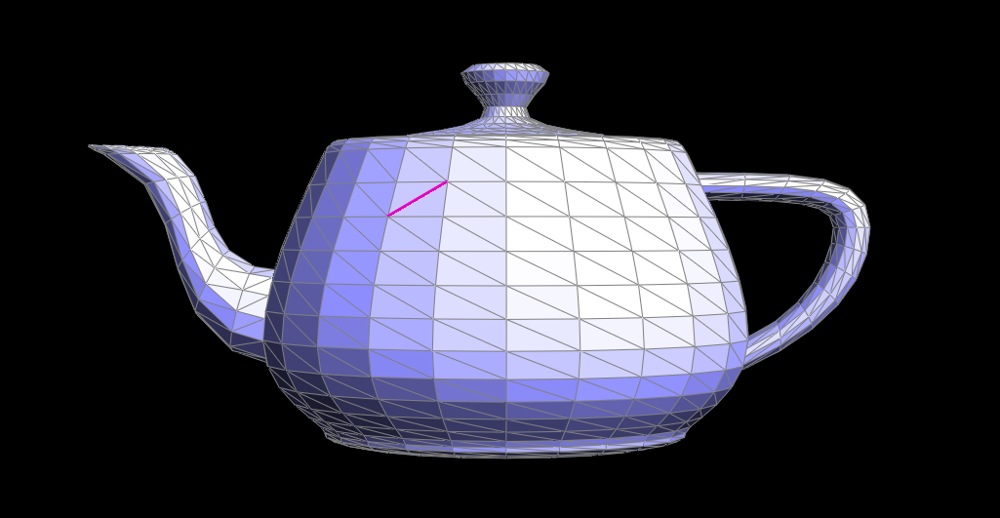
|
Similar to the edge flip, we drew out a diagram of the changes the mesh would go through, labeling all components. WE reused the labeling from part four and added in several new labels for the new vertex, edges, and face. Again, we followed my hand drawn diagram for how to update each part after the split.
|
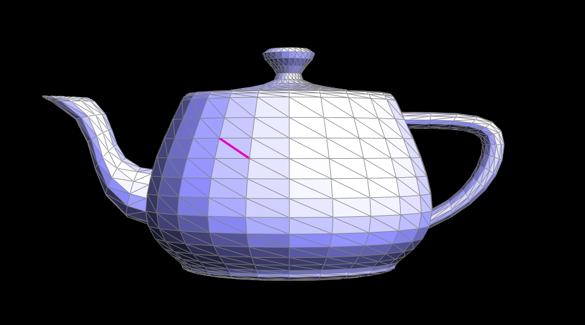
|
|
|
To implement loop subdivision I closely followed the steps outlined in the starter code. First, I calculated future positions of the existing vertices and stored them in the vertices’ newPosition for future updates. Then I calculated the future positions of the existing edges. Third, I called splitEdge from the previous part to split every edge in the existing mesh. The new vertices are marked as new ones so that for the next step we can properly identify which edges need to be flipped. The condition for flipping the edge is having one end to connect to an old vertex and one end connect to a new vertex. Once that is done all the vertices old and new, are updated to their new position.
To have the cube subdivide symmetrically, I flipped edges so that each vertex at the opposite corners of the cube have the same number of edges connected to it. That way once the edges are split it maintains symmetry in the 3D space. The important thing to note while flipping and splitting is that each face should have a similar area so that when it is subdivided further it reminds the same ratio as surrounding faces, this way a smoother image can be created.
| 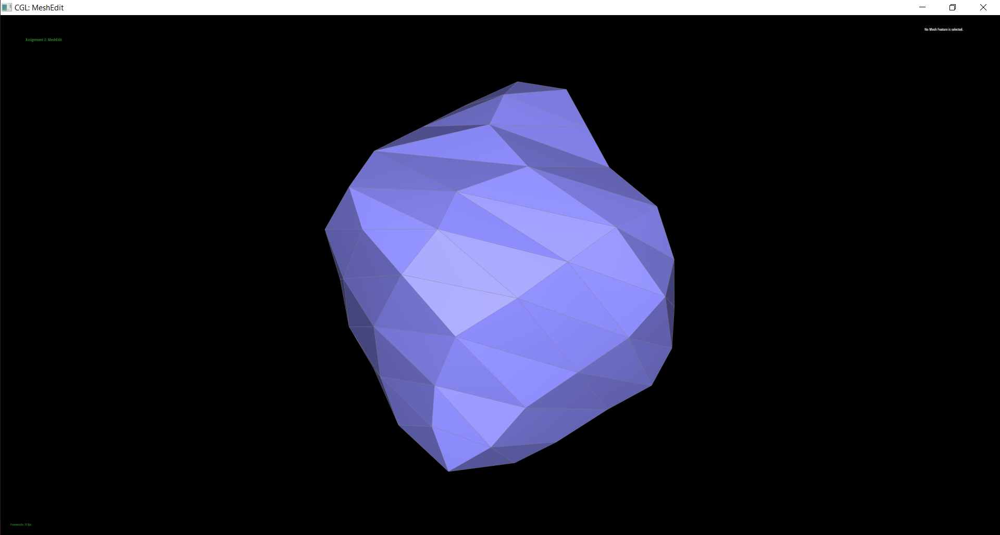 | 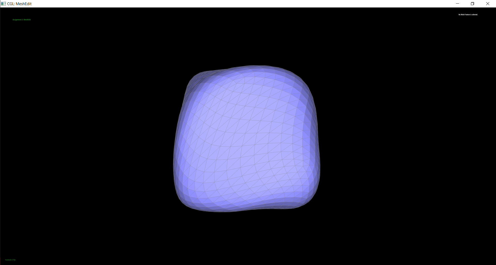 | |
| 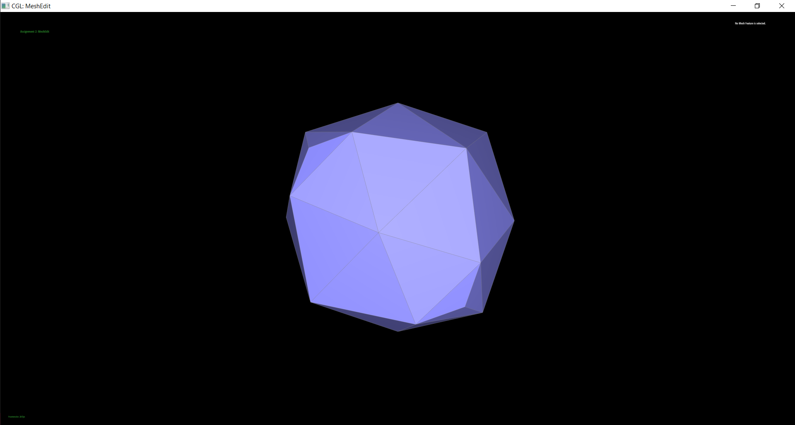 | 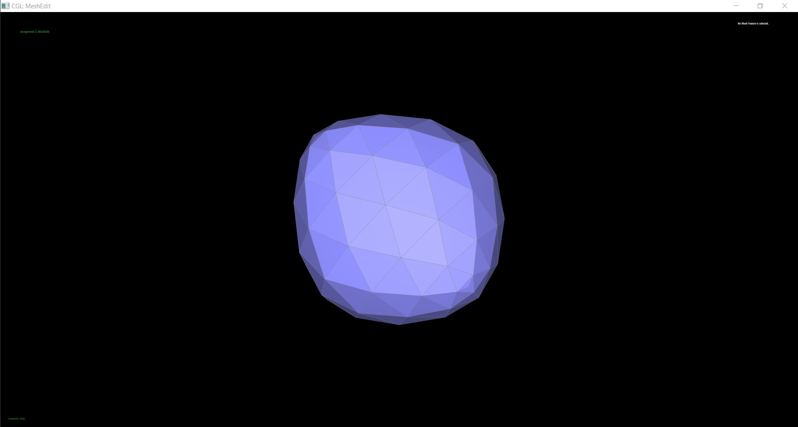 | 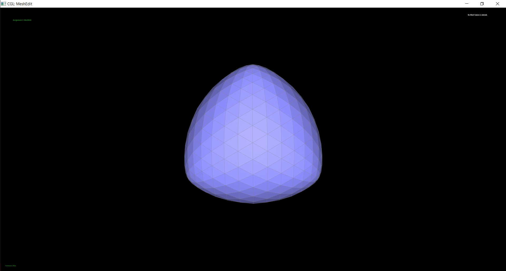 |